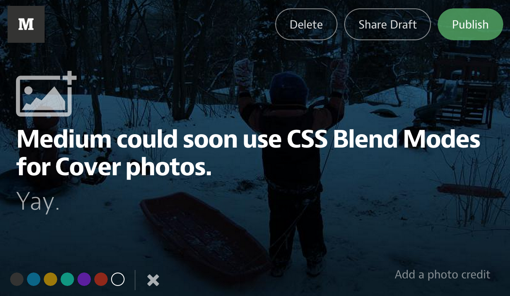

CSS3
Blendmode and Filter
Bài thuyết trình của Thang Kieu / @thangkieu91
Tính năng mới trong CSS3
Blendmode
Filter
Blendmode
Ví dụ
Blend mode trên PTS
Các trường hợp áp dụng
- Có 2 trường hợp:
- Áp dụng trên HTML/CSS
- Áp dụng trên Canvas
Blendmode trên HTML/CSS
Sử dụng CSS áp dụng lên các element trong HTML
- Trong cùng một element
- Nhiều element
- Có 2 thuộc tính để sử dụng cho 2 trường hợp trên
background-blend-mode

Thành phần
Ví dụ
mix-blend-mode
- Thành phần
- Backdrop
- Ví dụ
Blendmode for CANVAS
globalCompositeOperation
Cú pháp:
context2d.globalCompositeOperation = < blend-mode > || < composite-mode >
Các giá trị của blend mode
< blend-mode > = normal | multiply | screen | overlay |
darken | lighten | color-dodge | color-burn | hard-light |
soft-light | difference | exclusion | hue | saturation |
color | luminosity
Ví dụ:
Canvas blend
Các trình duyệt hỗ trợ
Blend mode chưa được hỗ trợ nhiều trên các trình duyệt
Chrome
background-blend-mode: Chrome 35
mix-blend-mode: enabled "Experimental Web Platform Features" trong chrome://flags.
Firefox
background-blend-mode: Firefox 30
mix-blend-mode: Firefox 31
Safari
Safari 8
IE: không hỗ trợ
Opera
background-blend-mode: Opera 22
mix-blend-mode: enabled "Experimental Web Platform Features" trong opera://flags.
Filter
Filter là gì?
Cú pháp
.filter-me {
filter: < fitler-function > [< other-filter-function >];
}Filter function
blur || brightness || contrast || url drop ||-shadow || grayscale || hue-rotate || invert || opacity
.filter-me {
filter: blur(20px);
}Filter properties
filter: blur([pixels | percentage])
filter: sepia([number | percentage])
filter: saturate([number | percentage])
filter: brightness([number | percentage])
filter: contrast([number | percentage])
filter: url()
filter: drop-shadow(x y radius color)
filter: grayscale([number | percentage])
filter: hue-rotate(angle)
filter: invert([number | percentage])
filter: opacity([number | percentage])
Filter on IE
Hỗ trợ một số bộ lọc filter trong IE8
Cú pháp: filter: < filter-function >
Các bộ filter hỗ trợ trên IEMột số bộ lọc
filter: progid:DXImageTransform.Microsoft.Alpha(opacity=50)
filter: progid:DXImageTransform.Microsoft.blur(pixelradius=3)
filter: progid:DXImageTransform.Microsoft.MotionBlur(Strength=30,Direction=45)
filter: progid:DXImageTransform.Microsoft.BasicImage(grayscale=1)